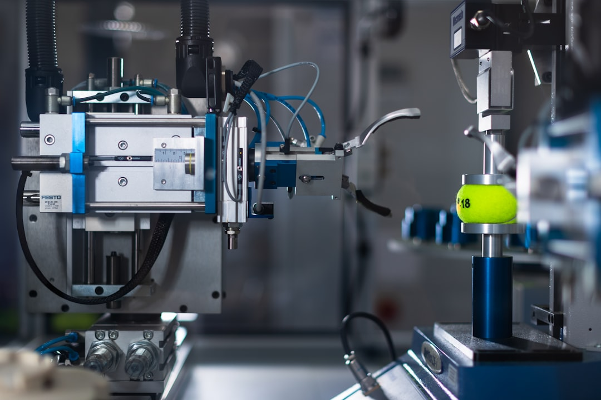

피지컬 AI 산업전략, 로봇·제조용 희토류 소재 수요 구조 바꾼다

2025년 국회에서 열린 '피지컬 AI' 산업전략 포럼에서 산업부·연구기관·기업 관계자들이 로봇·자율제조 분야를 AI의 다음 전선으로 규정했다. 글로벌 인간형 로봇 시장은 2030년까지 약 380억 달러 규모로 성장할 것으로 예측된다(골드만삭스 리서치, 2024).
로봇 관절·모터에는 네오디뮴-철-붕소(NdFeB) 영구자석이 핵심 소재로 사용된다. 인간형 로봇 1대에 필요한 NdFeB 자석의 양은 평균 약 1~2kg이며, 이 중 디스프로슘 함량은 약 5~8%다. 중국은 NdFeB 생산의 90% 이상, 디스프로슘 공급의 99% 이상을 통제하고 있다.
이트륨은 백색 LED 형광체(YAG:Ce)에서 출발해 이제 로봇 센서 세라믹 패키지, 고온 터빈 코팅(YSZ)으로 수요처가 확장되고 있다. 연간 글로벌 이트륨 수요는 약 9,000톤으로, 이 중 한국 수입량은 약 350~400톤 규모다. 국내 이트륨 조달의 80% 이상이 여전히 중국산이다.
산업은행이 2025년 선정한 AI·반도체 스타트업 15개사와 국민성장펀드 운용사 18곳에 배정된 총 투자 규모는 약 2조 원 이상이다. 이 투자의 수혜가 피지컬 AI 하드웨어 소재 생태계까지 이어지려면 별도의 소재 특화 투자 트랙이 필요하다.
피지컬 AI는 '소프트웨어 AI'와 달리 물리적 소재 소비를 수반한다. 로봇 한 대가 조립될 때마다 희토류 영구자석, 고순도 알루미늄 합금, 고강도 탄소섬유 등 소재 수요가 발생한다. 테슬라 옵티머스가 연간 100만 대 양산 목표를 선언한 상황에서, 이 수요가 현실화되면 NdFeB·디스프로슘 수급 구조가 현재의 디스플레이 수요 규모를 초과할 수 있다.
한국은 로봇 제조 역량(HD현대로보틱스, 삼성전자 레인보우로보틱스 지분 투자, LG전자 로봇사업부)을 확보하고 있지만, 핵심 소재 자급률이 거의 제로에 가깝다. 피지컬 AI 전략이 완성되려면 소재 공급망 확보를 하드웨어 전략의 최전선에 배치해야 한다. 그렇지 않으면 로봇 완성품을 만들더라도 핵심 소재를 중국에서 사야 하는 구조가 반복된다.
국내에서 이트륨·희토류 정제 역량을 보유하거나 확장 중인 기업이 수혜를 받는다. 고려아연 외에도 포스코퓨처엠이 리튬·니켈 이외 희토류 소재로 사업을 확장할 경우 장기 수혜주가 될 수 있다. 일본의 TDK·신에츠화학(Shin-Etsu)은 이미 NdFeB 자석 국내 생산라인을 보유해 한국 로봇 업체에 프리미엄 공급자 포지션을 가져갈 가능성이 높다.
HD현대로보틱스·레인보우로보틱스 등 국내 로봇 제조사들은 피지컬 AI 정책 투자의 직접 수혜를 받지만, 소재 조달을 국내화하지 못하면 수익성 구조 개선이 제한적이다. 소재 내재화에 성공하는 기업이 장기 마진 경쟁력을 갖는다.
소재 공급망 확보 없이 피지컬 AI 하드웨어 투자를 확대하는 기업은 중국발 소재 가격 변동에 고스란히 노출된다. 특히 NdFeB 자석 조달을 중국 단일 소스에 의존하는 중소 로봇 부품 업체들은 향후 중국의 희토류 추가 수출 규제 시 직접적 생산 차질을 피하기 어렵다.
산업은행 및 국민성장펀드가 AI·반도체 소프트웨어·팹리스 위주로 투자를 집중할 경우, 피지컬 AI의 하드웨어 소재 생태계는 투자 공백 상태로 남아 구조적 취약성이 지속된다.
기업 구매담당자는 로봇 소재 조달 계획에 '중국 외 희토류 소스' 옵션을 지금부터 검토해야 한다. 호주 라이나스(Lynas Rare Earths)는 NdPr(네오디뮴·프라세오디뮴) 산화물의 중국 외 최대 공급사이며, 한국 수요처와의 직접 계약 논의가 가능한 상태다.
투자자는 피지컬 AI 관련 펀드·ETF에 편입된 종목 중 소재 관련 기업의 비중이 얼마나 되는지를 확인해야 한다. 대부분의 피지컬 AI 테마 투자 상품은 소프트웨어·완성품 기업에 편중돼 있어, 소재 기업 직접 투자가 오히려 차별화된 수익 기회를 제공할 수 있다.
실제 조달 현장에서는 — 로봇용 이트륨계 세라믹 소재나 NdFeB 자석 블랭크를 처음 조달하려는 담당자들이 '중국 외 대안이 없다'고 생각하는 경우가 많다. 그렇지 않다. 일본 신에츠화학·TDK, 독일 VAC(Vacuumschmelze), 미국 MP Materials가 모두 한국 시장 진입 의향이 있다. 단지 한국 기업들이 먼저 손을 내밀지 않았을 뿐이다.
이 포스팅은 쿠팡 파트너스 활동의 일환으로 수수료를 제공받습니다.